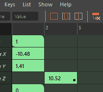

本主题介绍了“摄影表”(Dope Sheet)的“关键帧”(Keys)菜单中的选项。有关使用摄影表编辑器(Dope Sheet Editor)的信息，请参见使用“摄影表”(Dope Sheet)编辑关键帧。
- 转化为关键帧(Convert to Key)
-
将选定的受控关键点转化为关键帧。在“摄影表编辑器”(Dope Sheet Editor)中，受控关键点关键帧会在单元格右下角显示一个点。
- 转化为受控关键点(Convert to Breakdown)
- 将选定关键帧转化为受控关键点。
- 添加中间帧(Add Inbetween)/移除中间帧(Remove Inbetween)
-
在当前时间插入或删除中间帧关键帧，以将动画向前或向后移动一个时间单位。有关中间帧的详细信息，请参见中间帧主题。
- 禁用关键帧(Mute Key)
-
禁用选定关键帧。禁用的关键帧并不会影响其通道上的动画。您仍然可以将关键帧添加到已禁用的通道。
禁用的关键帧显示为带条纹的关键帧
- 取消禁用关键帧(Unmute Key)
-
取消禁用选定关键帧。未禁用的关键帧会影响其通道上的动画。取消禁用关键帧会使其退出“已禁用”(Muted)状态（由“摄影表”(Dope Sheet)大纲视图中关键帧单元格上的条纹线指示），但不会将其移除。
注： 使用“关键帧 > 取消禁用关键帧”(Keys > Unmute Key)来取消禁用关键帧只会影响选定关键帧。可以使用“摄影表”(Dope Sheet)大纲视图中的“禁用”(Mute)图标 来取消禁用整个通道。
来取消禁用整个通道。
- 移除关键帧(Remove key)
- 打开“移除关键帧”(Remove key)子菜单，使用以下选项删除选定的一个或多个关键帧：
- 未捕捉(Unsnapped)：删除未捕捉到整个帧的任何关键帧。单击
 以查看“移除未捕捉关键帧选项”(Remove Unsnapped Keys Options)。
以查看“移除未捕捉关键帧选项”(Remove Unsnapped Keys Options)。
- 当前帧之前(Before Current Frame)：删除当前时间标记之前的所有关键帧。单击 以查看“当前帧之前选项”(Before Current Frame Options)。
- 当前帧之后(After Current Frame)：删除当前时间标记之后的所有关键帧。单击 以查看“当前帧之后选项”(After Current Frame Options)。
- 超出选定范围(Outside Selected Range)：删除选定范围外的所有关键帧。单击 以查看“超出选定范围选项”(Outside Selected Range Options)。
- 删除涟漪(Ripple Delete)：删除指定帧之间的所有关键帧，并闭合由删除操作产生的间隙。单击 以查看“删除涟漪选项”(Ripple Delete Options)。
- 冗余关键帧(Redundant Keys)：删除具有类似值的所有关键帧以简化动画。单击 以查看“移除冗余关键帧选项”(Remove Redundant Keys Options)。
- 未捕捉(Unsnapped)：删除未捕捉到整个帧的任何关键帧。单击